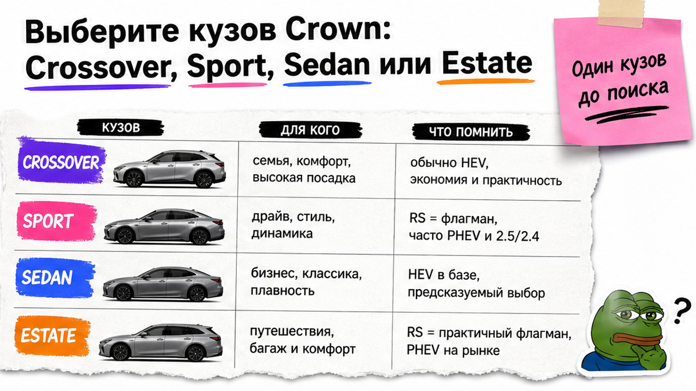
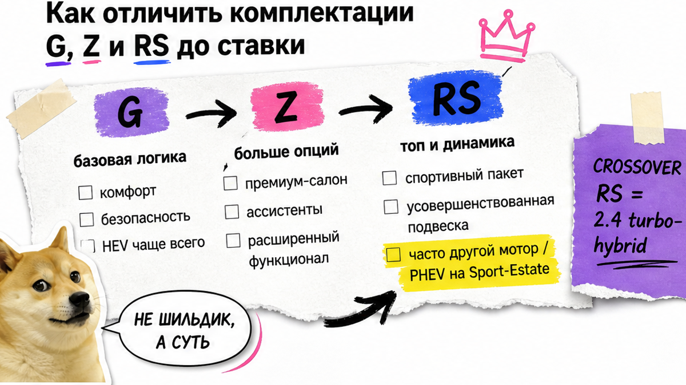
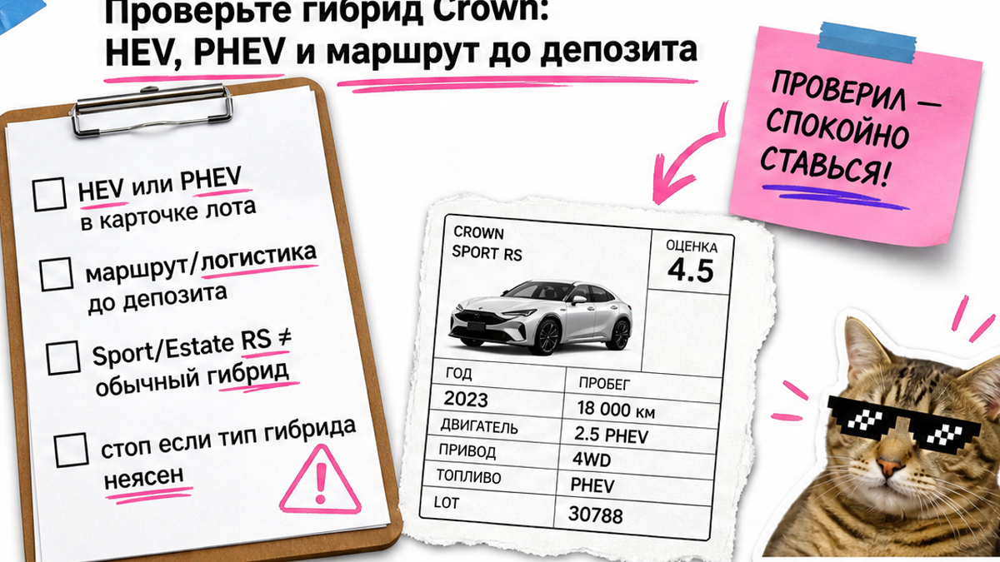

Иван из Новосибирска почти кинул депозит на "Crown Sport RS" из-за красивых 21" дисков. В листе он не заметил: это plug-in гибрид (PHEV), оценка 3.5 и пометка W2 на крыле. Ставка сорвалась бы в дорогую логистику и спор о состоянии. Боль типичная: путаете кузова и буквы G/Z/RS, боитесь депозита. Ниже – чеклист до ставки: один кузов, понятный гибрид, стоп-флаги листа. Сможете сами отсеять рискованный лот или отправить короткий бриф в каталог.
TL;DR / Быстрый инсайт: С марта 2025 у Toyota Crown в Японии уже четыре кузова – Crossover, Sport, Sedan и Estate, а не "просто седан". Буквы G/Z/RS – уровни оснащения, но у RS часто другой мотор: на Sport/Estate это часто PHEV, на Crossover – 2.4 turbo-hybrid. До депозита читайте аукционный лист: R/RA и неясный тип гибрида – стоп. Результат сегодня: заполненный бриф из 8 пунктов без "гуру" в чате.
Мы в Авто-Сейлс во Владивостоке видим одну и ту же сцену: человек влюбляется в фото, а лист и маршрут смотрит уже после ставки. На практике тойота краун из японии в 2026 – это не одна модель, а линейка с разными багажниками, приводами и гибридами. Красивая цена на экране аукциона ещё не "под ключ".
Честно говоря, магии менеджера тут не нужно. Нужен короткий порядок: кузов → буква комплектации → HEV или PHEV → лист → вопрос по маршруту. Дальше разберём каждый шаг так, чтобы новичок не утонул в японских PDF.

Типичная ошибка – искать "просто Краун" и потом удивляться, что Sport не седан для семьи. Сюрприз для новичка: с 13 марта 2025 Toyota официально закрыла линейку четвёртым кузовом Estate. Ориентир по японскому MSRP Estate: Z HEV около 6,35 млн ¥, RS PHEV около 8,10 млн ¥ (Toyota Global Newsroom).
| Кузов | Для кого | Что помнить до поиска лота |
|---|---|---|
| Crossover | Город, универсальный быт | G/Z = 2.5 HEV; RS = другой мотор (2.4 turbo-hybrid) |
| Sport | Динамика, "спортивный" кросс | G/Z = HEV; RS часто = PHEV, не тот же гибрид |
| Sedan | Классический FR-седан | G/Z HEV; у седана нет RS в линейке дилера |
| Estate | Багажник, активный быт | Z = HEV; RS = PHEV; старт продаж с марта 2025 |
Например, семье с чемоданами чаще спокойнее Crossover Z или Estate Z, а не "любой красивый RS". Sport – не синоним "лучше для всех": это отдельный характер и часто другая силовая установка на топе.
Сделайте: выберите один кузов под сценарий (город / багаж / динамика) до открытия аукциона. Не делайте: мешать Sport, Sedan и Crossover в одном запросе "найдите любой Краун подешевле".

Буквы в названии лота – не украшение. На пальцах: G – база, Z – богаче по оснащению, RS – топ. Но топ часто меняет мотор, а не только кожу и диски.
Ориентир по японским PDF сравнения оборудования (цены с налогом, срез '26.9 / '25.10, не "под ключ" в РФ):
В реальном проекте подбора смотрите не только букву, но и код кузова в карточке (например AZSH36W / AZSH38W на живых лотах осени 2026). Если нужен спокойный HEV Z, а в строке RS PHEV – это другой лот, а не "та же машина побогаче".
Сделайте: запишите в бриф желаемый уровень (G / Z / RS) и запрет на "сюрприз-мотор". Не делайте: верить менеджеру на слово без сверки буквы, кода кузова и типа гибрида в листе.

HEV – обычный гибрид: бензин плюс электромотор, розетка не нужна. PHEV – plug-in: батарею можно заряжать от сети, запас на электротяге больше, логистика и быт другие. На Crown это критично: Sport RS и Estate RS часто именно PHEV, а Crossover RS – turbo-hybrid 2.4, не тот же 2.5 HEV, что у G/Z.
Отдельно про вывоз. С 9 августа 2023 METI запретил экспорт в РФ авто с двигателем свыше 1900 cc (бензин/дизель), а также гибридов, PHEV и EV. Тойота краун гибрид из японии в 2026 нельзя считать "простой прямой посылкой". Делать самому "наугад" – путь в простой и нервы. До депозита уточняйте у подборщика проходной сценарий, сроки и что входит в "под ключ". Готовых сумм пошлин в статье нет – актуальный расчёт только по конкретному лоту.
Страх дорогих узлов тоже живой: в community обсуждают батарею, инвертор и помпы охлаждения на гибридных Crown прошлых поколений. До ставки в брифе должен быть пункт "проверить гибрид-систему", а не самодиагностика по фото.
Сделайте: в запросе явно напишите HEV или PHEV и попросите маршрут через Владивосток до оплаты. Не делайте: ставить депозит по красивой аукционной цене, пока неясен тип гибрида и схема доставки.
Схема до депозита:
Бюджет "под ключ" (запрос расчёта) → один кузов → G/Z/RS → HEV или PHEV → чтение листа → стоп по R/RA → вопрос по маршруту во Владивосток → только потом депозит
Актуальные лоты и расчёт по вашему брифу – в каталоге avto-sales125.ru. Форм на странице нет: цифры живут в каталоге и переписке.
Фото продаёт эмоцию. Лист продаёт факт. Оценка на японском аукционе – это не "оценка перекупа с рынка", а внутренняя шкала площадки плюс схема повреждений и рукописные заметки.
Стоп-лист до ставки (по гайдам чтения листа и практике импорта):
Типичная ошибка новичка: Google Translate "на глаз" по рукописной строке и ставка в ту же минуту. Рукопись переводите спокойно, лучше с человеком, который читает листы каждый день.
Сделайте: проверьте лист сверху вниз до любой оплаты. Не делайте: решать по дискам и ракурсу камеры, игнорируя оценку и схему.
Вот ваш критерий успеха: перед депозитом чеклист заполнен, лоты с R/RA и неясным гибридом отсеяны, бриф можно отправить без звонка "гуру".
Нужна сверка буквы комплектации по живому лоту – напишите в Telegram avtosales125. Избегайте самостоятельной ставки "наугад" только по скрину салона.
Сделайте: пройдите чеклист сверху вниз и сохраните бриф в заметках. Не делайте: пропускать пункты 4–6 ради "успеть на торги сегодня".
Отзывы о работе команды можно посмотреть на 2GIS Авто-Сейлс. Офис во Владивостоке, Днепровская 40а, стр. 4 – хаб СВХ и выдачи по России.
Материал проверен: Редакция Авто-Сейлс (эксперты по авто под заказ из Японии, Кореи и Китая).
Достоверность: факты сверены с Toyota Global Newsroom (линейка Estate, 13.03.2025), PDF сравнений toyota.jp (Crossover/Sport/Estate), METI (экспортный контур с 09.08.2023), гайдами чтения аукционного листа (JP Sheet) и практикой сопровождения заказов через Владивосток; актуальные расчёты – в каталоге.
Crossover – универсальный кросс для города и быта, седан – классический FR-формат без RS в линейке дилера. Сделайте выбор по багажнику и посадке до поиска лота, не делайте ставку "на красивое фото без кузова в брифе".
Прямой экспорт гибридов/PHEV в РФ с августа 2023 в зоне ограничений METI. Проверьте проходной сценарий и маршрут у подборщика до депозита; не делайте DIY-ставку вслепую.
G – база, Z – баланс оснащения, RS – топ и часто другой мотор (PHEV или turbo-hybrid). Выберите уровень под бюджет ремонта и зарядки; отсекайте RS PHEV, если нужен обычный HEV Z.
Это сигнал истории ремонта/аварии на уровне аукциона, не "мелкий скол стекла". При R/RA без экспертизы – стоп. Не путайте с кодом R на схеме стекла.
Sport – спортивный характер, а RS часто PHEV. Для семьи чаще спокойнее Crossover Z или Estate Z. Сверьте тип гибрида в карточке до эмоций по дискам.
Заполните чеклист из 8 пунктов выше, соберите бриф и отправьте его в каталог или Telegram на проверку лота. Результат дня – отсеянные красные флаги, а не депозит в спешке.